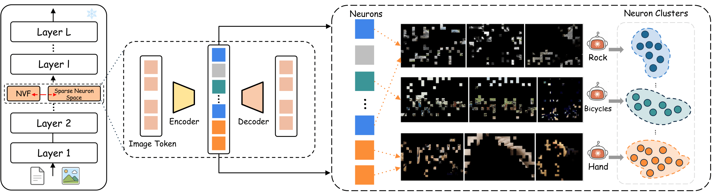
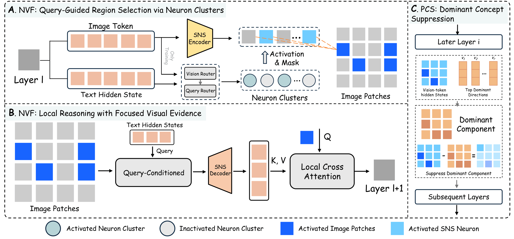
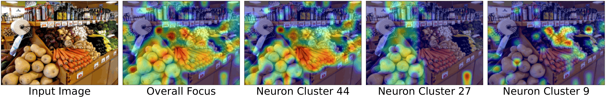
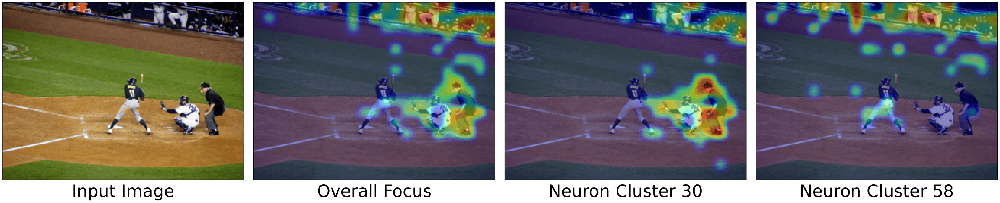
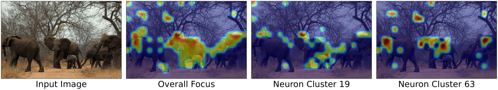
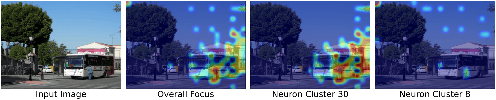
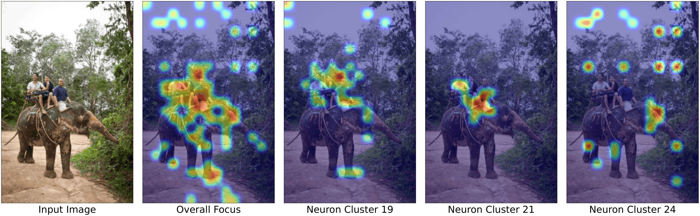

Sparse Neuron Space SNS
A sparse autoencoder decomposes intermediate vision-token states into an overcomplete basis. Selective neurons are labeled from their activating patches and organized into concepts.
Current vision-language models encode visual information in dense hidden states where object identity, spatial layout, and local attributes are implicitly entangled. This makes it difficult to isolate and modulate the visual evidence required by a particular language query.
Inspired by sparse population coding and top-down modulation in biological vision, we introduce NeuronEye, a plug-in framework that constructs a sparse, concept-level neuron vocabulary from intermediate VLM representations and selectively activates query-relevant visual concepts during inference. It decomposes vision-token states into an overcomplete sparse basis, activates relevant concept clusters, localizes the patches where those concepts appear, and injects focused evidence back into the model. A complementary suppression mechanism preserves weaker but relevant cues. All operations run in a single forward pass over a frozen VLM backbone.
NeuronEye separates concept discovery, query-guided activation, and perceptual balancing into three complementary stages.
A sparse autoencoder decomposes intermediate vision-token states into an overcomplete basis. Selective neurons are labeled from their activating patches and organized into concepts.

A lightweight router combines the language query with image-side evidence to select relevant clusters. Their strongest patches are refined and injected back into only the corresponding vision tokens.
At a later layer, PCS attenuates dominant perceptual directions so that focused activation does not drown out weaker spatial relations or fine-grained attributes.

Evaluated on CV-Bench, BLINK, RealWorldQA, and MMStar with frozen VLM backbones.
NeuronEye improves CV-Bench overall accuracy from 78.5 to 81.6. Its largest improvements occur on structure-sensitive tasks: Distance rises by 9.5 points, Relation by 2.3, BLINK Multi-view by 8.3, and Localization by 3.3.
The same pattern transfers to LLaVA-1.6-7B, including gains of +6.9 on Distance, +12.1 on Relation, and +8.1 on Localization.
Absolute accuracy-point improvement over the Qwen2.5-VL-7B baseline.
Representative VLMs and NeuronEye applied to two different backbones. Results reproduce the complete comparison from the main paper.
| Model | CV-Bench | BLINK | Other | |||||||
|---|---|---|---|---|---|---|---|---|---|---|
| Overall | Count | Depth | Dist. | Rel. | Overall | MV. | Loc. | RWQA | MMStar | |
| Representative VLM backbones | ||||||||||
| DeepSeek-VL1 | 61.6 | 59.0 | 63.2 | 58.2 | 68.5 | 38.1 | 50.4 | 37.7 | 50.5 | 38.9 |
| Idefics3-8B-Llama3 | 67.7 | 60.5 | 72.8 | 67.2 | 73.4 | 42.7 | 45.9 | 50.8 | 62.0 | 49.3 |
| Phi-4 Multimodal | 71.7 | 68.5 | 74.2 | 70.8 | 75.1 | 49.7 | 48.1 | 56.6 | 61.8 | 59.7 |
| InternVL3-8B | 81.3 | 70.9 | 84.8 | 83.1 | 89.7 | 51.3 | 51.1 | 58.2 | 68.2 | 59.4 |
| LLaVA-OneVision | 76.0 | 67.3 | 80.3 | 78.5 | 80.8 | 46.2 | 57.1 | 54.9 | 66.7 | 68.3 |
| NeuronEye applied to different backbones | ||||||||||
| LLaVA-1.6-7B | 64.3 | 63.3 | 77.8 | 54.5 | 63.3 | 36.6 | 40.7 | 38.0 | 61.6 | 36.9 |
| + NeuronEye | 65.7 ±0.5 | 55.0 ±0.2 | 74.5 ±1.0 | 61.4 ±0.9 | 75.4 ±0.5 | 37.2 ±0.7 | 48.4 ±1.9 | 46.1 ±0.6 | 60.7 ±0.7 | 36.9 ±0.1 |
| Δ | +1.4 | −8.3 | −3.3 | +6.9 | +12.1 | +0.6 | +7.7 | +8.1 | −0.9 | +0.0 |
| Qwen2.5-VL-7B | 78.5 | 67.1 | 87.2 | 76.2 | 87.2 | 52.1 | 55.6 | 53.3 | 68.5 | 58.8 |
| + NeuronEye | 81.6 ±0.3 | 67.9 ±0.6 | 87.0 ±0.4 | 85.7 ±0.8 | 89.5 ±0.5 | 52.8 ±0.2 | 63.9 ±0.4 | 56.6 ±0.9 | 68.8 ±0.4 | 59.3 ±0.5 |
| Δ | +3.1 | +0.8 | −0.2 | +9.5 | +2.3 | +0.7 | +8.3 | +3.3 | +0.3 | +0.5 |
All methods use Qwen2.5-VL-7B and are evaluated under the same protocol.
| Method | CV-Bench | BLINK | Other | |||||||
|---|---|---|---|---|---|---|---|---|---|---|
| Overall | Count | Depth | Dist. | Rel. | Overall | MV. | Loc. | RWQA | MMStar | |
| Vision-token reduction methods | ||||||||||
| FastV | 75.9 | 64.0 | 83.5 | 74.5 | 85.5 | 48.4 | 55.6 | 49.2 | 68.8 | 55.1 |
| SparseVLM | 69.8 | 54.3 | 74.7 | 68.8 | 86.3 | 46.9 | 55.6 | 59.0 | 50.9 | 53.8 |
| PruMerge | 71.6 | 55.2 | 78.0 | 74.0 | 83.2 | 46.8 | 54.9 | 51.6 | 64.3 | 50.6 |
| MustDrop | 73.7 | 58.6 | 81.5 | 74.8 | 83.9 | 47.2 | 55.6 | 52.5 | 65.1 | 53.0 |
| PyramidDrop | 72.5 | 60.2 | 78.7 | 70.8 | 84.2 | 49.1 | 55.6 | 52.5 | 62.2 | 50.3 |
| Representation-level intervention methods | ||||||||||
| SSL | 77.6 | 66.2 | 84.5 | 76.0 | 87.9 | 51.3 | 55.6 | 52.5 | 69.5 | 58.1 |
| SAVE | 77.9 | 66.2 | 85.7 | 76.5 | 87.2 | 52.3 | 55.6 | 54.9 | 69.0 | 59.2 |
| VISTA | 78.0 | 66.0 | 85.8 | 76.2 | 88.0 | 51.7 | 55.6 | 53.3 | 69.4 | 59.6 |
| NeuronEye | 81.6 ±0.3 | 67.9 ±0.6 | 87.0 ±0.4 | 85.7 ±0.8 | 89.5 ±0.5 | 52.8 ±0.2 | 63.9 ±0.4 | 56.6 ±0.9 | 68.8 ±0.4 | 59.3 ±0.5 |
Top-activating patches reveal selective neurons for semantic objects, visual attributes, and scene structure.
Selected concept clusters localize distinct evidence needed to answer each query.





@article{yan2026neuroneye,
title = {NeuronEye: Query-Guided Visual Concept Activation for
Vision-Language Reasoning},
author = {Yan, Ruiyu and Chen, Bowen and Wan, Shaowen and Zhao, Lin},
journal = {arXiv preprint arXiv:2609.38098},
year = {2026}
}